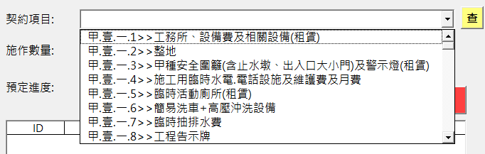

施工日誌VBA-V3.6.0系列更新說明
前言
本篇文章延伸於 施工日誌VBA-V3.5.0 版本操作教學，非常感謝各路好友提供寶貴意見，本篇下方會詳列各版本修改進程供各位做參考。
新功能
- 後處理工具匯入
- 契約項目搜尋
- 不計工期
- 自動換行
錯誤修復
- 欄位寬度摺疊顯示
- 工料設定自動編號
主要功能說明
[契約設定]後處理工具匯入
考量有些專案不一定會用PCCES來處理預算書內容，可能只是一個很像的EXCEL檔，故提供"契約設定模板"範本供使用者手動填寫再進行匯入，需注意填寫過程項次不能重複。
[日報填寫]契約項目搜尋
契約項目的下拉式選單組成為"契約項次>>契約項目"，故可以進行契約項目關鍵字的搜尋或者契約項次的關鍵字搜尋。
舉例: 
- 如要進行契約項次的搜尋，輸入關鍵字「甲.壹」，則會列出所有甲.壹開頭的契約項目
- 如要進行契約項目的搜尋，輸入關鍵字「安全圍籬」，則會列出所有名稱具有安全圍籬的契約項目。
不計工期功能
建立不計工期工作表，如為不計工期的日期時，進度與前日有計工期時相同
自動換行
輸出施工日誌時，如有契約項目比較長的情況，以往採用欄位內文字大小自動縮放進行處理，然而如文字長度過長時，會讓契約項目變得無法肉眼識別，因此改用自動換行搭配列高自動調整處理。
主要錯誤說明
欄位寬度摺疊顯示
欄位寬度不足以顯示日期時，EXCEL內建的搜尋功能會失效，故在進行搜尋前先針對預計要搜尋的工作表進行欄寬自動適應。
工料設定自動編號
原工料設定過程在編號時會透過計算同性質的個數做加總後加一換算，如果有先進行刪除再自動編號的話會有編號重疊的問題，導致報表輸出時的搜尋功能異常，故改為自動編號之前先針對同性質的內容排序後取最大值加一換算。
版本細節
| 版本號 | 型態 | 內容 |
|---|---|---|
| V3.6.6 | Feature | 數量計算表頁尾加入第O頁/共O頁 |
| Fix | 修正工料設定自動編號重複問題 | |
| V3.6.5 | Fix | 調整各表欄位自動縮放，避免出現###影響搜尋 |
| V3.6.4 | Fix | 列印報表時預設為第一個報表項目 |
| V3.6.3 | Fix | 第六項列高自動調整 |
| V3.6.2 | Fix | 修復clsInfo查找欄位問題、列印日報前會先進行進度重整 |
| V3.6.1 | Fix | 修復呈現竣工日期欄位找尋問題(clsReport) |
| V3.6.0 | Feature | 第二大項跟第三大項數量沒有就增列一行空白列 |
| Feature | 施工日誌成果依照日期呈現(原本設計為按照編號) | |
| Feature | 機具、人力、材料按照類別排序 | |
| V3.5.12 | Fix | 數量計算表原呈現0.00修正為- |
| Fix | 前期完成數量公式修正 | |
| Fix | 數量計算表表報編號欄位補上錯誤控制 | |
| V3.5.11 | Fix | 工料設定下拉式選單更新，修改生效日控制，可以進行刪除 |
| Feature | frmData剩餘數量提醒紅字增加警告視窗! | |
| Feature | 表單顯示修改成"不"強制響應 | |
| Fix | P008 列高自動調整 | |
| V3.5.10 | Feature | 加入搜尋功能，可以搜尋項目或搜尋項次，空白則全顯 |
| Feature | 加入新報表，建築物施工日誌(不含項次)，修復本日不施工欄位 | |
| Fix | 新增數量計算表，工作表名為建築物施工日誌(月底) | |
| Fix | 施工項目呈現的數量到小數點後第2位，Numberformatlocal | |
| Fix | 表報編號顯示修改為<<契約編號>>，使用字串格式 | |
| V3.5.9 | Feature | 加入新報表，建築物施工日誌(月底)，為數量計算表 |
| Feature | 輸出報表時字體大小設置10pt為自動換行，做AutoFit顯示 | |
| Fix | 調整契約項目主項大類判定欄位為"單位"=空白 | |
| Feature | 加入契約項目標記"H"為折疊項目 | |
| V3.5.8 | Fix | 修復eng_pgs<>1的錯誤，如果為double需要先做round(x,6) |
| Feature | 加入不計工期功能，功能位於frmPgs的右下角 | |
| V3.5.7 | Fix | 加入"本日無施工"項目，預設進度為前日累計進度 |
| V3.5.6 | Fix | 列印報表時隱藏空白列位材料名稱偵測修復(hideEmptyRow) |
| V3.5.5 | Feature | 基本操作權限控管加入clsFetchURL |
| V3.5.4 | Fix | 契約項目中主項目判定修復(IsMainItems(cont)) |
| Feature | 契約項目可以引入後處理工具產生之excel | |
| Fix | 不計入進度項目仍提供給使用者進行填寫 | |
| V3.5.3 | TODO | 新增監造報表(管理處)版本-尚未完成 |
| Fix | 變更設計後其契約數量為0的監造日報顯示文字修正 | |
| Feature | 新增getRangeByKey，優化adjustRow、hideEmptyRow | |
| V3.5.2 | Fix | 資料要進入各表時，先做好欄位格式處理(日期) |
| V3.5.1 | Fix | 當編輯日報引入資料至frmData時，再進行新增無法清空(clearFrmDataInfo) |
| Fix | 日報表單原本預設非是即無，新增空白項目並設定為預設 |